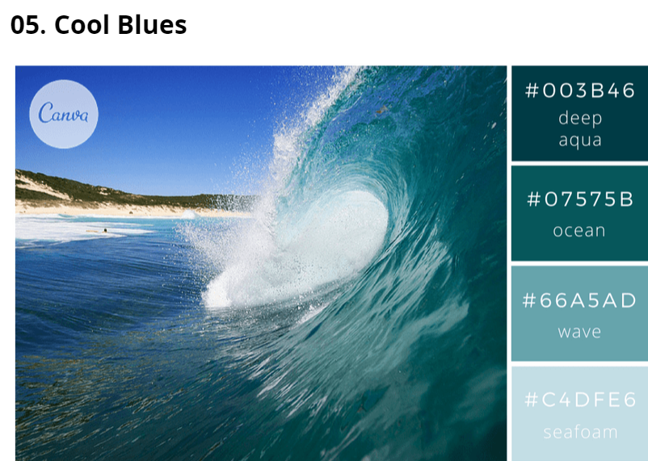
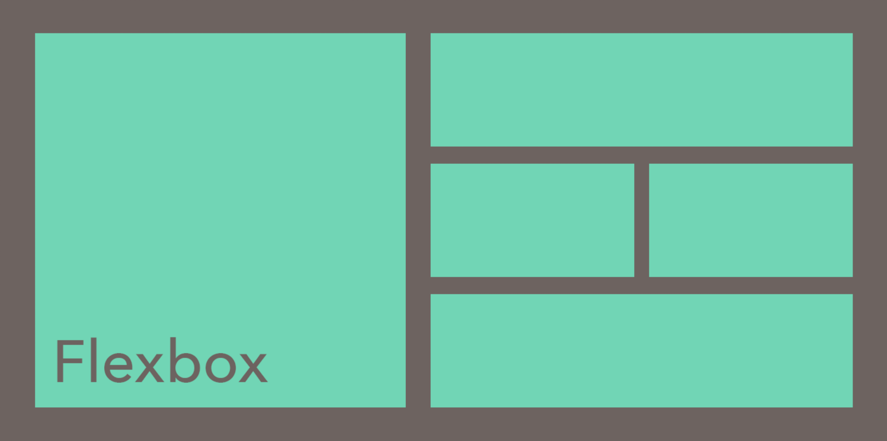

Velkommen!
På denne nettsiden kan du lære retningslinjer for hvordan du bør designe nettsider.
Under finnes det generell informasjon som du kan lese deg mer opp på i navagasjonslinjen ovenfor.
På denne nettsiden kan du lære retningslinjer for hvordan du bør designe nettsider.
Under finnes det generell informasjon som du kan lese deg mer opp på i navagasjonslinjen ovenfor.
Farger er en essensiell del av det å bygge nettsider. Det kan skape både stemning og troverdighet, men må gå innen noen spesisfikke retningslinjer. Ved valg av farger må man ta hensyn til svaksynte ettersom det er viktig at alle kan navigere nettsiden din. Fargene skal også kunne utheve viktige elementer på nettsiden, og gjøre det oversiktlig og navigerbart. Likevel kan man ha uttalige fargekombinasjoner som kan fremme nettsiden din på en god måte!
En ny funksjon i HTML5 er "flexbox". Dette er en samling av en rekke posisjonerings-funksjoner som gjør det lettere å designe nettsider uten bruk av den eldre "float" funksjonen. Man kan nå med enkle koder sentrere alt innhold, og holde andre deler av nettsiden symmetrisk i forhold til hverandre.
Når du designer en nettside er det viktig å vite hvem man kommuniserer med. Målgruppen må forstå deg, kunne navigere og synes informasjonen er relevant og interresant!